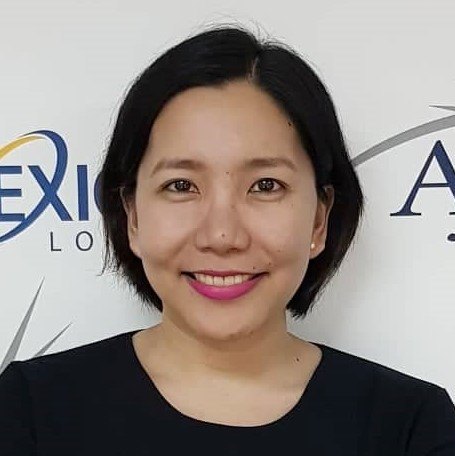

Tentativa,Zare-Ann E.
#37 A Dafodil St. Bautistaville Subd.,Brgy. Rosario Pasig City 1609
Mobile +63 939 248 6279
Email zareann@yahoo.com
|

|
|
|
SUMMARY OF QUALIFICATIONS
-
Highly organized and detail-oriented with a positive attitude and aptitude for strategic thought and planning and the ability to adapt quickly to new ideas and situations;
- Dedicated and focused; able to prioritize and complete multiple tasks and follow through to achieve organizational goals and efficient delivery of service and good public relations;
- Independent and self-motivated; able to grow positive relationships with clients and colleagues at all organizational levels.
- Computer literate; Skills includes: MS Word, Excel, and powerpoint
- Assistant Call Center Manager for 4 years and is highly skilled in KPI Analysis with a decent background in COPC Processes. Skills specialize on Operational and Financial KPIs, processes, and quality assurance.
- Started in the BPO Industry as the age of 19 and was promoted to team lead post at 22 years old and an Assistant Call Center Manager at 24.
- Contributed to the growth and good performance of the process with my knowledge in root cause analysis and good people skills.
- Accomplished Operations Manager in the ABG Insurance group. Responsible for improving attendance, decreasing attrition and winning intersite contest with counterparts US sites. Part of VTO creation process. Part of recruitment process for new hires.
|
|
|
EDUCATIONAL BACKGROUND
College
|
Associate in Arts |
University of the Philippines Open University
Manila Philippines (2011-present)
|
BS in Marketing Management |
St. Pauls Business School
Tacloban Leyte (2001-2004)
|
Secondary Education |
Sacred Heart College
Catbalogan, Samar (1997-1999)
Holy Infant College
Tacloban, Leyte (1999-2001)
|
PROFESSIONAL BACKGROUND
cxLoyalty Philippines
Operations Manager
June 26, 2017 - Present
- Responsible in planning, coordinating and directing the operations of the ABG team.
- Responsible for improving and ensuring the productivity, efficiency, profitability and performance of the team.
- Goal is to meet and possible exceed business/company goals and metrics directed by the client. Ensuring consistency with performance.
- Create initiatives to improve performance
- Introduce new policies and process to improve quality of employment.
- Handle client services calls to address ongoing issues and create solutions together with the clients.
|
Affinion International Philippines (Membership Services)
Team Leader
April 2016 – June 25, 2017
- Performed all necessary supervisory functions based on Affinion Guidelines
- Train, Supervise and motivate retention specialist.
- Focuses on save efforts and customer service.
- Part of the company launch since day 1.
- Set a positive example through knowledge, commitment and work ethic.
|
FIS Global Solutions (American Express and Ceridian Small Market)
Team Leader
February 2013 – April 2016
- Performed all necessary supervisory functions based on FIS Coaching Guidelines and Processes.
- Supervised, motivated and appraised the performance of staff.
- Resolve problems among subordinates, giving honest feedback to low performers and taking disciplinary action in accordance with company policy.
- Product Trained for both American Express and Cobra Tier1 Process.
|
|